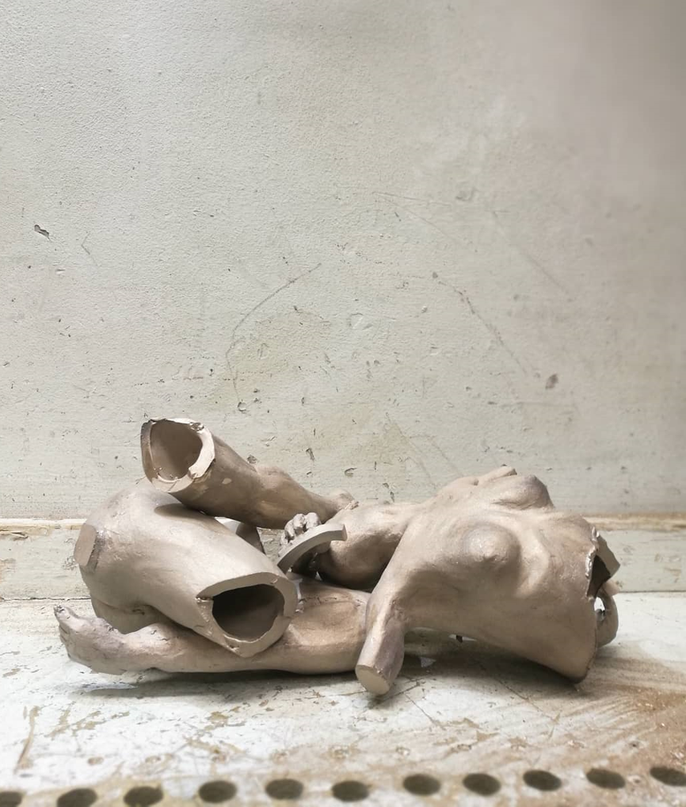

Investment Casting a Bronze Statue
Have you ever wondered how a bronze statue is made? It is an interesting process that has been used
for thousands of years, and while the materials and tools used have evolved with time, the process is
largely the same.
Step 1: Creating the mould

A mould of the initial model, (made from modelling plasticine), is made in two halves. The first half is
made by by pouring silicone over the model when it is half submerged in clay.
The The model is then flipped over and silicone is poured over the top again, creating the second half of
the mould. Notice the cone added to the mould - this is to allow wax to be poured into the mould.
Step 2: Creating an expendable wax replica
The mould is filled with hot wax, and a wax copy of the original is made.
Step 3: Creating an expendable mould of the wax model
The wax model is then chopped into bits, and more channels are added to each part to allow for the metal to
be poured into the mould. Each part is then coated in various grades of plaster, forming a ceramic shell
around each part.
The model is cast in smaller parts because it makes it easier for the molten bronze to fill the moulds, and
smaller parts are less prone to shrinkage and warping, as the metal cools.
The wax within the ceramic moulds removed, by heating the ceramic shells.
Step 4: Casting the parts in bronze
These ceramic moulds are filled with molten bronze, and allowed to cool. Once the bronze has set, the pieces are removed from the moulds.

Step 5: Assembling the statue
The model is welded back together.
Step 6: Finishing the statue
Once fully assembled, the statue is polished, and a patina is applied. Notice the screw, welded to the foot so the statue can be mounted to a base.